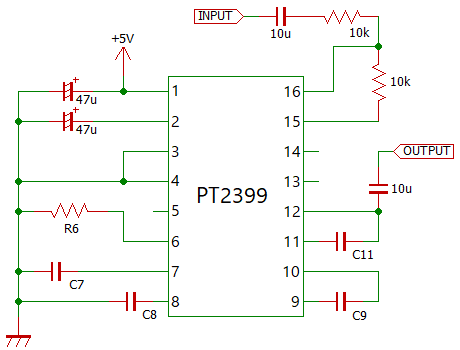

PT2399 周辺コンデンサ検討
2021年08月07日 カテゴリー：実験等
デジタルディレイIC PT2399の7～12ピンに接続するコンデンサの役割について調べ、最適な値を検討しました。
PT2399のデータシートは内容が少ないため、以下を参考にしました。
・ElectroSmash - PT2399 Analysis
・M50195PデータシートPDF（PT2395互換品）
・M50199PデータシートPDF（同種IC）
PT2399のアナログ-デジタル変換方式は、Adaptive Delta Modulation（ADM）と呼ばれるものです。ADMはM50199Pのデータシートで解説されているので、以下に転載しておきます。
ADM変復調
ADMとは、Adaptive Delta Modulation の略で、適応デルタ変調とも呼ばれます。これは、1ビット符号によりアナログ-ディジタルの変換を行うもので、多ビットによるものより装置を簡略化・低コスト化できます。
ADMの原理は、信号周波数に対して十分に高い周波数でサンプリングすると、すべての隣接サンプル値間で、その変化値はほとんどある一定値以内になり、その変化値が正であるか負であるかの情報のみ（1ビット）符号化します。（図1参照）これがDM（デルタ変調）と呼ばれる方式です。しかし、このままでは図1の様な急激な立ち上がり信号のときでは、一定値だけの加減では追随できず（傾斜過負荷歪）、また、図2の様に無信号では大きな雑音源（粒子性雑音）となることがわかります。
そこで一定値（デルタ）の幅を信号の状況に応じて適応的に制御し、図1の様な急激な傾斜をもつ信号のときは、デルタ幅を大きく、また図2の様な無信号時ではデルタ幅を小さくし、歪・S/Nを改善したものが、ADM方式と呼ばれます。
M50199Pでは電流制御回路（CC1）、外付のコンパレータ、オペアンプ（OP1）で構成したミラー積分器によりADM変調（A-D変換）を行い、電流制御回路（CC2）、オペアンプ（OP2）で構成したミラー積分器により、ADM復調（D-A変換）を行います。
PT2399について、M50199Pと同様に考えます。
CC0とCC1（Current Control：電流制御）に繋ぐコンデンサはADMのステップ幅の予測器に使われ、9～12ピンに繋ぐコンデンサはADMの積分器を構成するものと考えられます。
サンプリング周波数は、内部VCO（Voltage Controlled Oscillator）によって決定されます。VCOの発振周波数が低くなると、サンプリング間隔が長くなりディレイタイムが伸びます。それと同時に、量子化誤差が大きくなり音質が劣化します。
下図の最小限の回路で、コンデンサの静電容量値を変えた場合の特性等を測定します。入力レベルは-10dBu（約0.69Vp-p）です。

【C9・C11】
積分器のコンデンサ容量を小さくすると、ADMのデルタ幅を大きくできるため波形追従能力が上がります。その半面、最小のデルタ幅も大きくなりノイズが増えると考えられます。→参考ページ：EEEGUIDE.COM - Delta Modulation(DM)
- 波形 R6 = 0Ω C7 = C8 = 100nF C9 = C11 = 100nF
各周波数の正弦波を入力した場合の出力波形です。
8kHzではほとんど波形追従できなくなり、三角波となっています。
- スルーレート R6 = 0Ω C7 = C8 = 100nF
今回の例でスルーレートと呼んでよいのかはわかりませんが、オペアンプでいうスルーレートにあたるものを算出してみます。1Vp-pの矩形波を入力しています（画像クリックで波形拡大表示）。
C9 = C11 = 10nF 0.039 V/μs
C9 = C11 = 47nF 0.014 V/μs
C9 = C11 = 100nF 0.0080 V/μs
C9 = C11 = 220nF 0.0041 V/μs
NJM4558が1V/μsなので、増幅しないことを考慮してもかなり遅いです。
- 周波数特性 R6 = 0Ω C7 = C8 = 100nF
ディレイタイムを変えても周波数特性は変わらなかったので、最短ディレイタイムでのデータです。
▽C9 = C11 一つは入力レベル+10dB

音量またはコンデンサ容量増加で波形追従できなくなり、高音域が劣化しやすくなることがわかります。
▽C9 ≠ C11 の場合
低音域側と高音域側のバランスが崩れています。A-D変換とD-A変換の不整合が起こると考えられるので、無理にこの方法で音色を調整しない方がよいでしょう。
- ノイズ・歪率（1kHz正弦波を入力） C7 = C8 = 100nF
▽R6 = 0Ω C9 = C11
▽R6 = 22kΩ C9 = C11
10nF以外は微妙な差ですが、コンデンサ容量を減らすとノイズレベルが上がることがわかります。
【C7・C8】
残念ながらADMの予測器というのがどのような回路かわかりません。容量値を変えた時の変化を確認してみます。
- 周波数特性 C9 = C11 = 100nF C7 = C8
特に差は認められませんでした。
- ノイズ・歪率（1kHz正弦波を入力） C9 = C11 = 100nF
▽R6 = 0Ω C7 = C8

▽R6 = 22kΩ C7 = C8
1μFと100nFはあまり差がありませんが、1nFだとノイズが増えて歪率が上がりました。
- スルーレート C9 = C11 = 100nF （画像クリックで波形拡大表示）
C7 = C8 = 1nF 0.0099 V/μs
C7 = C8 = 1μF 0.0080 V/μs
1nFだと改善がありましたが、あまり効果は大きくありません。
【まとめ】
- 9・10ピン間、11・12ピン間のコンデンサ
容量値を大きくするほど低ノイズ化、高音域カットとなります。ディレイタイム、入力レベルをどの程度で考えるかにもよりますが、概ね47nF～100nFがよいでしょう。
- 7・8ピンに繋ぐコンデンサ
ある程度大きい容量値が必要で、100nFあれば充分そうです。小型の積層セラミックコンデンサを使って問題ないと思います。
結局のところデータシート記載の回路例で問題ないという結果になりました。しかしながら、PT2399を使ったエフェクターを設計したいという方にとっては少しは有用なデータだったのではないかと思います。